CRADLE OF PHILIPPINE ART

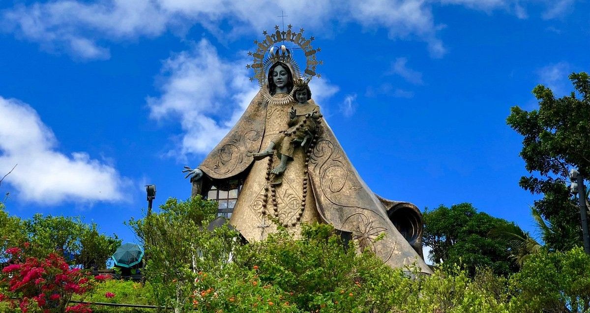
Regina Rica in Tanay
THE MUNICIPALITY OF TANAY
From majestic mountain views to hidden waterfalls and historic landmarks where nature, adventure, and culture come together.
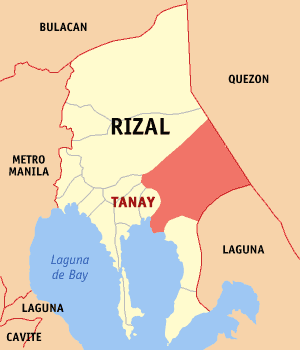
Municipality in Rizal Province
Tanay is located 37 kilometers (23 mi) from Antipolo and 54 kilometers (34 mi) from Manila. It contains portions of the Sierra Madre Mountains and is bordered by Rodriguez in the north, Antipolo in the north-west, Baras, Morong and Teresa in the west, General Nakar (Quezon) in the east, and Pililla, Santa Maria (Laguna) as well as the lake Laguna de Bay in the south.
The municipality is composed of several barangays including Cayabu, Cuyambay, Daraitan, Katipunan-Bayan, Kaybuto, Laiban, Mag-Ampon, Mamuyao, Pinugay, Plaza Aldea, Sampaloc, San Andres, San Isidro, Santa Inez, Tandang Kutyo, and Tinucan. These barangays range from urban centers near the town proper to mountainous and rural communities within the Sierra Madre area, contributing to Tanay’s diverse landscape and culture.
View in Google Maps >>>
Discover the vibrant culture and enduring traditions of Tanay, Rizal, where community celebrations and local customs reflect the town’s rich heritage and strong sense of identity. Through its colorful festivals and time-honored practices, Tanay warmly welcomes visitors to experience the spirit, creativity, and unity of its people.
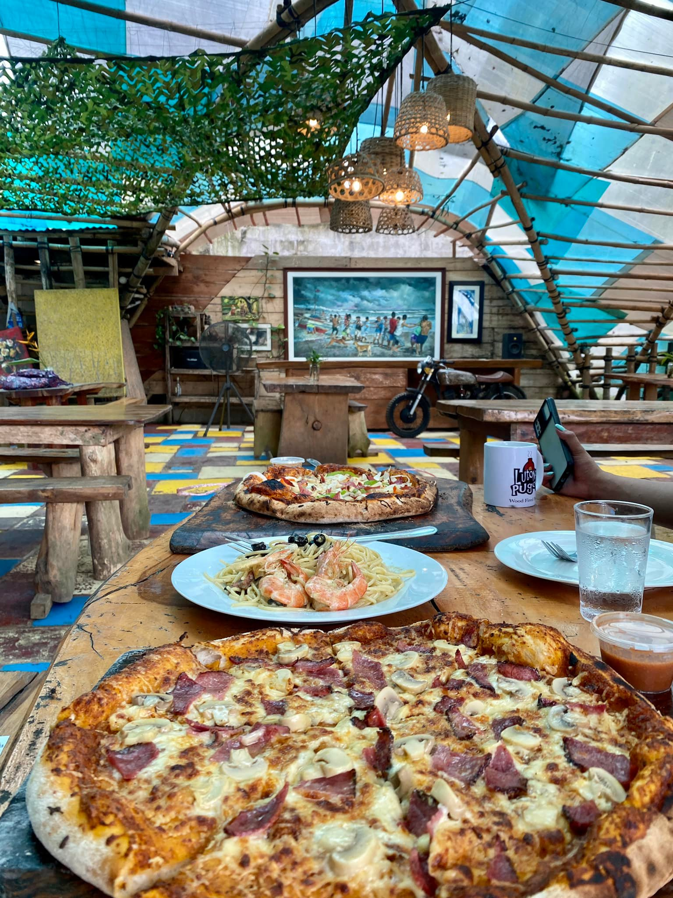
Pugon-Style Pizza
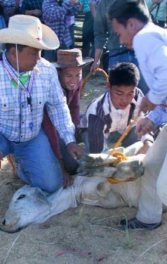
Rodeo Festival
Sikaran
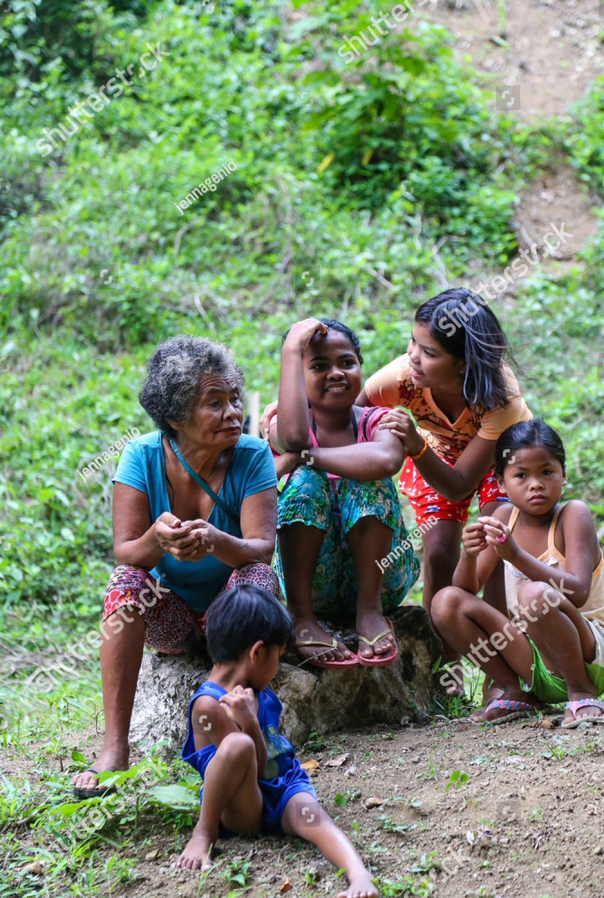
Indigenous People of Tanay
Sinanglay na Tilapia
Annual Festival in Tanay, Rizal
The Hane Festival is an annual celebration held in Tanay to commemorate the town’s founding anniversary every November 12. It is an agri – eco – tourism, arts, and cultural exhibition in one, showcasing Tanay’s vibrant tourism, abundant agricultural produce, healthy and sustainable environment, rich arts and culture, and amiable people. It derived its name from an ordinary expression of Tanayan (‘’hane’’) which is used to seek one’s agreement.
The word “Hane” comes from a common expression used by locals that means seeking agreement, similar to saying “di ba?”, which reflects the friendly and united nature of the community. During the celebration, residents and visitors gather to enjoy traditional dances, local products, agricultural displays, and different competitions that promote the town’s heritage and natural attractions. Through the Hane Festival, Tanay proudly presents its identity, creativity, and hospitality while strengthening community pride and encouraging tourism in the municipality.
View more of the festivals and traditions >>>
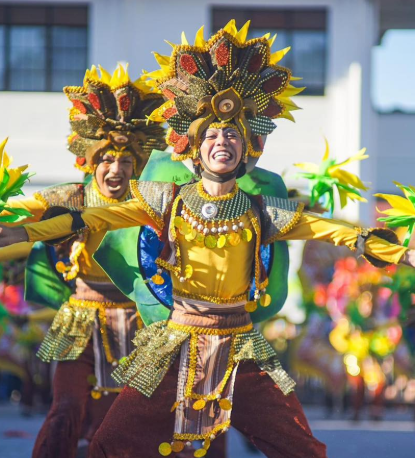
Nestled at the foot of the majestic Sierra Madre Mountains, the municipality of Tanay is known for its breathtaking natural landscapes and peaceful countryside charm. From scenic mountain views and refreshing waterfalls to historical churches and cultural sites like Daranak Falls and Tanay Church, Tanay offers visitors a perfect blend of nature, history, and adventure waiting to be explored.
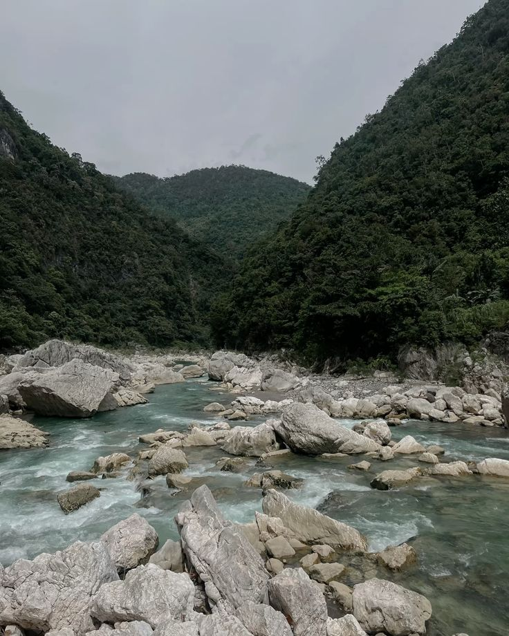
Daraitan
Paseo Rizal - Mayagay
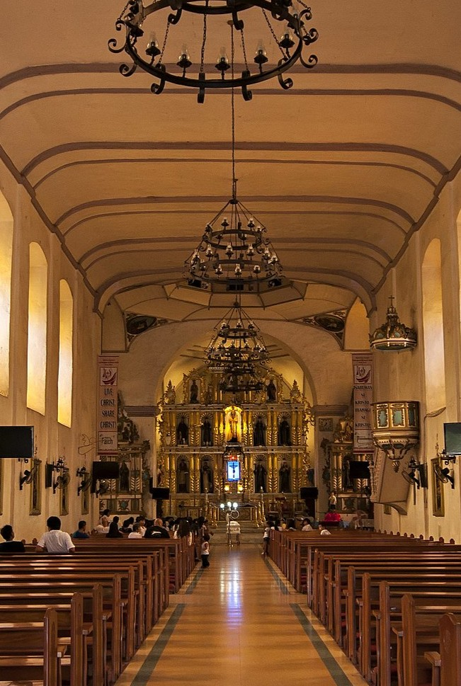
San Ildefonso de Tolledo Church
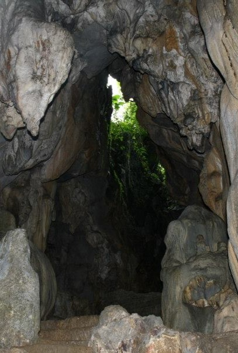
Calinawan Cave
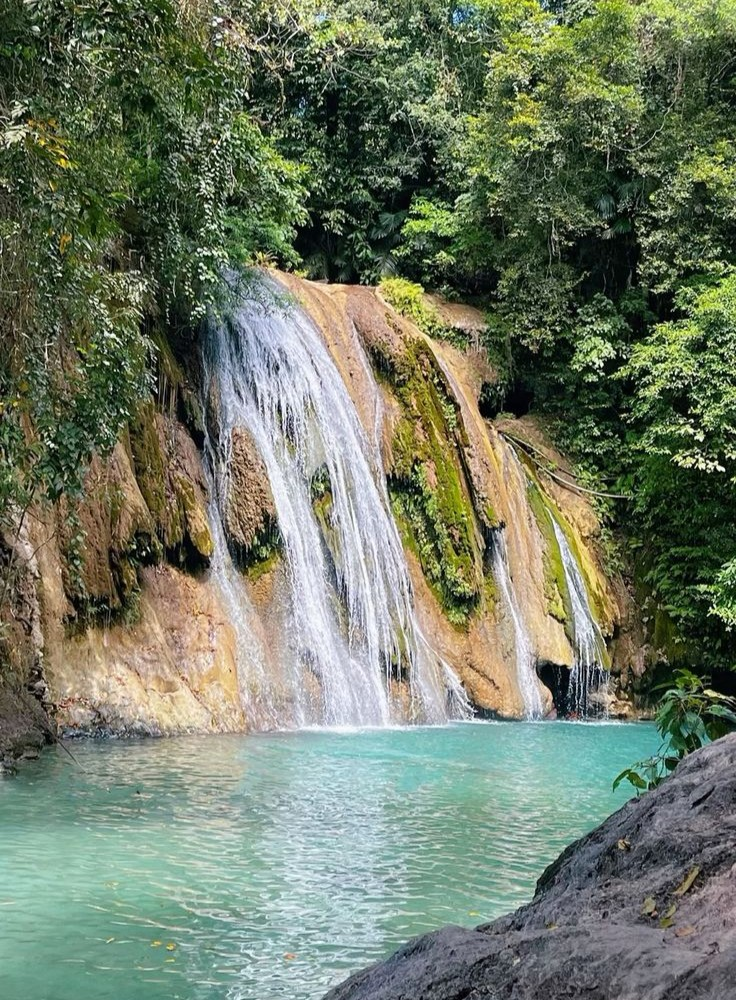
Daranak Falls Rd, Tanay, Rizal
The Daranak Falls is considered a haven get-away of local and foreign tourists, especially during summer months. Daranak is nestled quietly at the foot of Tanay mountain range, preserved with natural vegetation ornamented with forest trees and flowering wild plants complemented with the beautiful cascading waterfalls, streams and ditches which truly enchanting and fascinating.
Daranak Falls is a perfect escape for families and barkadas as well as bike or motorcycle riders. Getting there takes only about 2 hours from Manila without traffic (except for bikers), driving through paved roads and a short rocky downhill path going to the resort's main gate and adequate parking area.
View more tourist attractions >>>
Tanay, originally settled by Austronesian people, became an independent town in 1606 and experienced several historical challenges, including uprisings and relocations. Its residents played important roles in the Philippine Revolution against Spain and served as a key site during the Philippine–American War, even briefly acting as the capital of the then Morong Province.
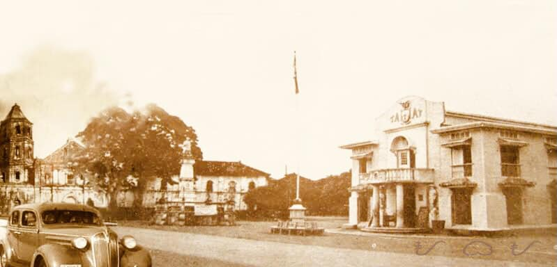
During World War II, the mountains of Tanay served as a base for Filipino guerrillas under General Agustin Marking, contributing to the town’s liberation from Japanese occupation. In the post-war years, Tanay developed as a scenic and cultural destination, with the Sampaloc summer resort established in 1959, highlighting its natural beauty and making it one of the notable attractions in Rizal Province.
View more of the history of Tanay >>>